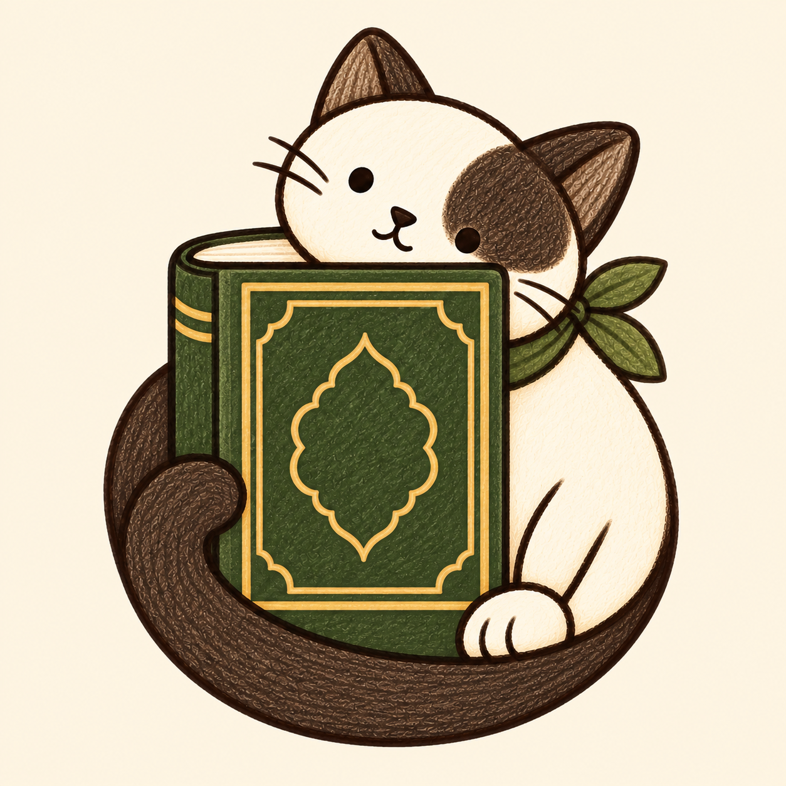
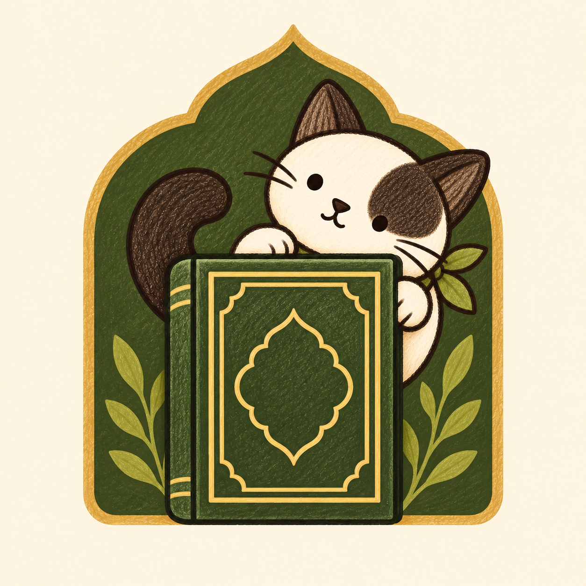

Three new directions with the same warm cream, olive Qur’an and familiar cat. The smaller previews show how each reads at 60 pixels.
Current iconCurrent
The existing illustration, for comparison.
Direction 1Reading companion
A closer face and an open Qur’an.
Direction 2
Quiet embrace
A rounded silhouette around the book.
Direction 3
Little sanctuary
A Qur’an and companion within a prayer arch.
Tap any large icon to inspect its full artwork. These are design previews; the installed icon is unchanged.